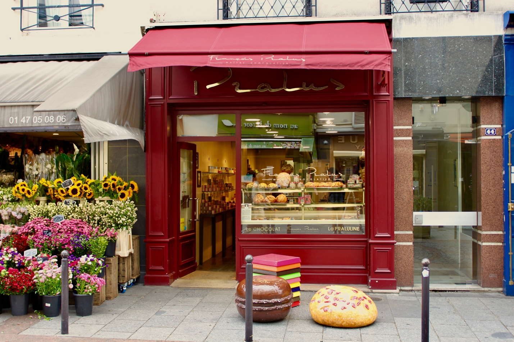

В 1950 году в Москве открылась уютная пекарня, которая быстро приобрела популярность благодаря своим вкусным выпечкам и домашней атмосфере. Жители города любили заходить сюда за свежими булочками, пирогами и тортами. С течением времени пекарня стала не только местом, где можно купить вкусные десерты, но и местом, где люди собирались вместе, чтобы пообщаться и расслабиться. В 1980 году сеть пекарен расширилась и открылось заведение в Санкт-Петербурге. Здесь также быстро полюбили выпечку и атмосферу пекарни. Сегодня пекарня продолжает радовать своих посетителей в обеих столицах, предлагая широкий ассортимент выпечки, свежие ингредиенты и теплую атмосферу. Люди до сих пор с удовольствием заходят сюда за десертами и приятным времяпрепровождением.
Пекарня остается популярным местом как для местных жителей, так и для туристов. Ее уютная атмосфера и качественная продукция привлекают людей всех возрастов и статусов. Здесь можно встретить как семьи, приходящие за десертами на выходные, так и деловых людей, забегающих на быструю закуску во время рабочего перерыва. Разнообразие выпечки в пекарне поражает: от классических булочек и пончиков до изысканных тортов и кексов. Повара используют только лучшие ингредиенты и соблюдают традиционные рецепты, что делает каждое блюдо неповторимым и вкусным. Посетители могут насладиться не только сладостями, но и разнообразными чаем и кофе, которые отлично дополняют выпечку. Помимо самого процесса пекарни, многие посетители ценят дружелюбный персонал и отличный сервис. Здесь всегда радушно встречают каждого гостя, помогают выбрать лучший десерт и создают уютную обстановку для приятного времяпрепровождения. В этой пекарне каждый чувствует себя как дома, что делает ее по-настоящему уникальным местом в городе.
